From One Notebook to Many Reports: Automating with Quarto
Charlotte Wickham
The Best and Worst Places to Grow Up: How Your Area Compares
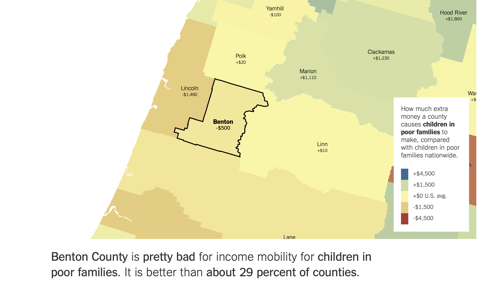
Washington State Soil Health Initiative: State of the Soils Assessment
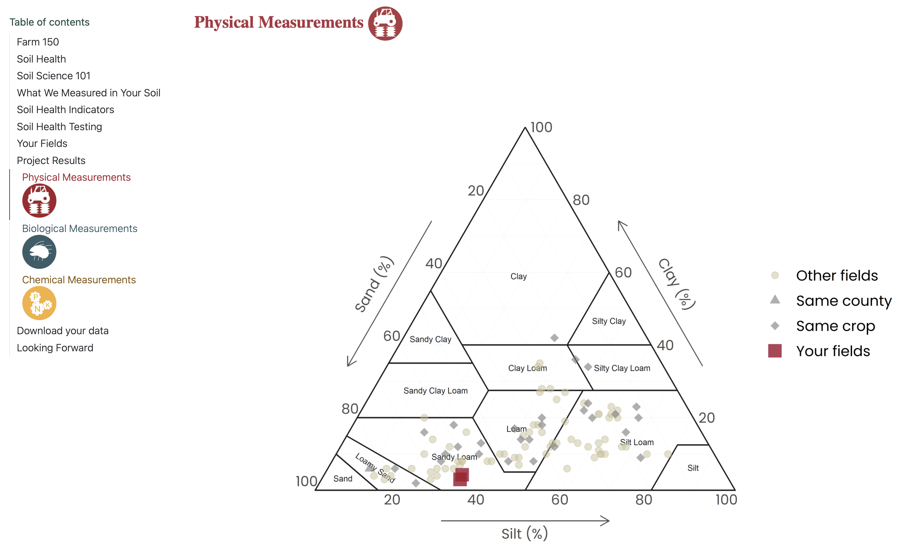
Built with 
by Jadey Ryan
From One Notebook to Many Reports with 
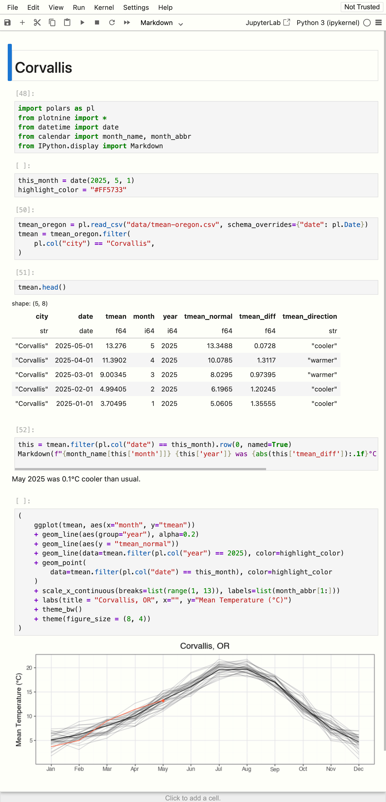
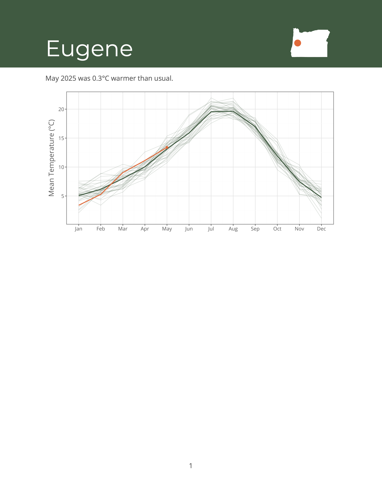
What is  ?
?
Quarto is an open-source, command line tool, built by Posit, to…
Turn notebooks into HTML documents
$ quarto render corvallis.ipynb
corvallis.html
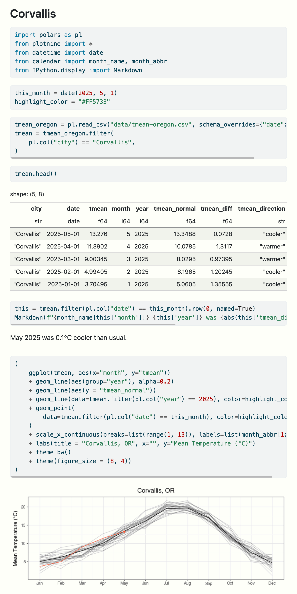
Turn notebooks into Word documents
$ quarto render corvallis.ipynb --to docx
corvallis.docx
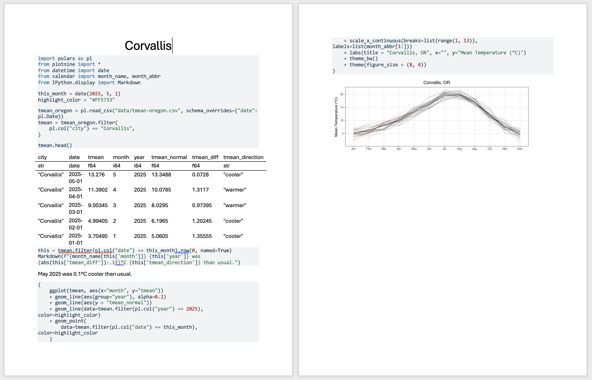{.border .tight fig-alt=“The corvallis.ipynb notebook rendered by Quarto to docx.}
Turn notebooks into PDF documents
$ quarto render corvallis.ipynb --to typst
corvallis.pdf
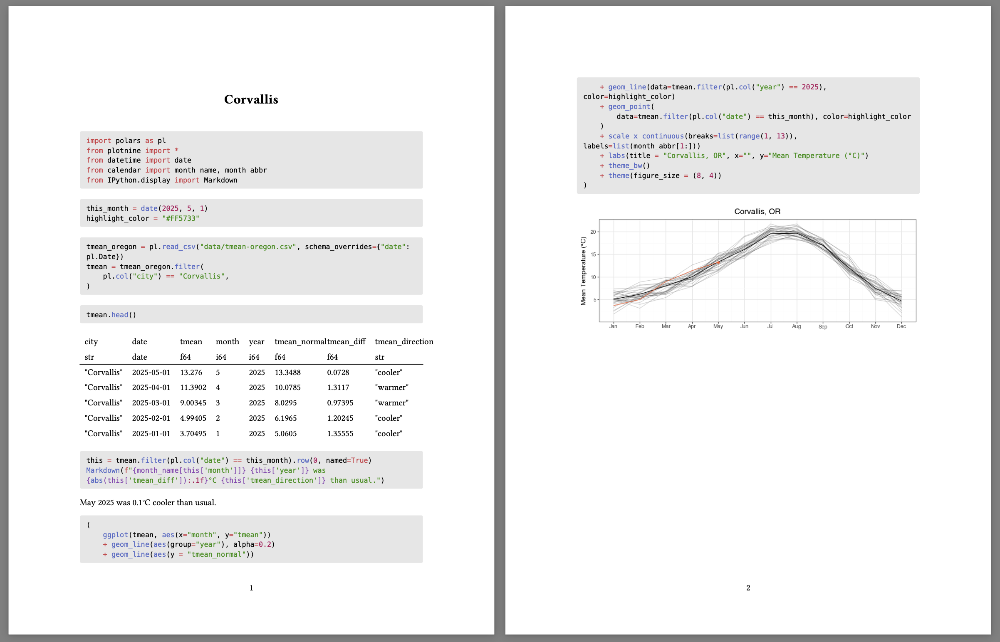
Set document options in a header
Set document options in a header
Set document options in a header
Set document options in a header
Set code cell options as #| comments
Quarto is …
A way to avoid copy-and-pasting into a Word document
And more…websites
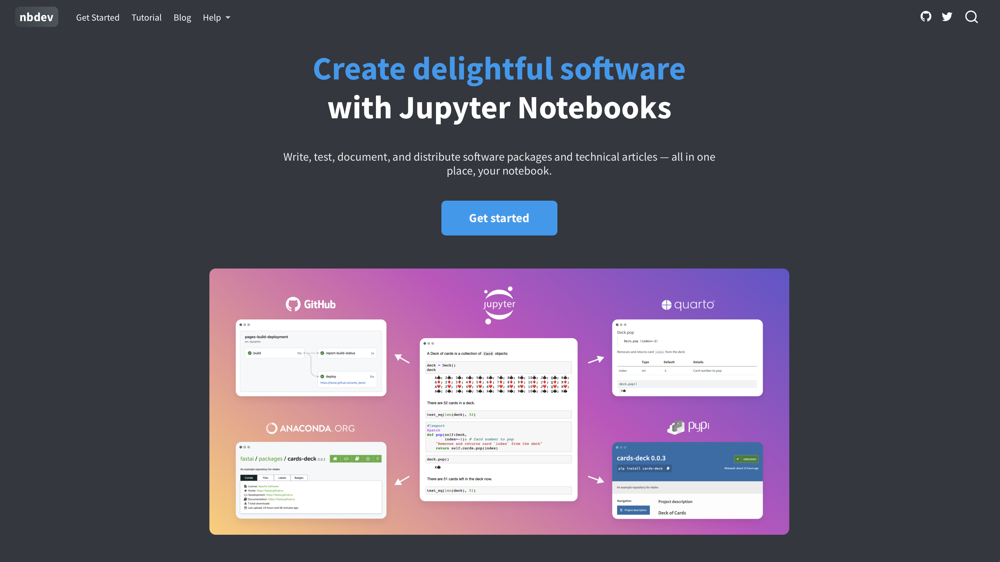And more…books
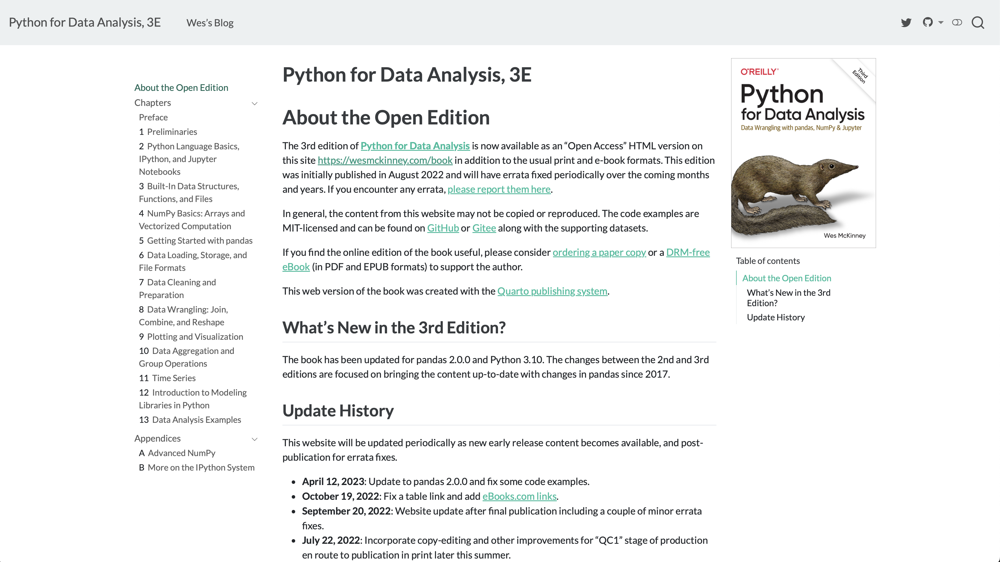And more…presentations
And more…publishing
quarto publish slides.qmd github-pages
Parameterized reports in Quarto
Start with a notebook that works for one value:
Turn hardcoded value into a variable
Make the variable a parameter
Render with a different parameter value
Automate rendering for all parameter values
1. Turn hardcoded value into a variable
corvallis.ipynb
2. Make the variable a parameter
Add the tag parameters to the code cell:
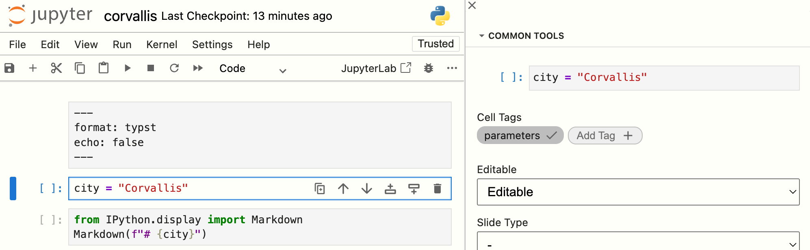
3. Render with a different parameter value
quarto render climate.ipynb
climate.pdf
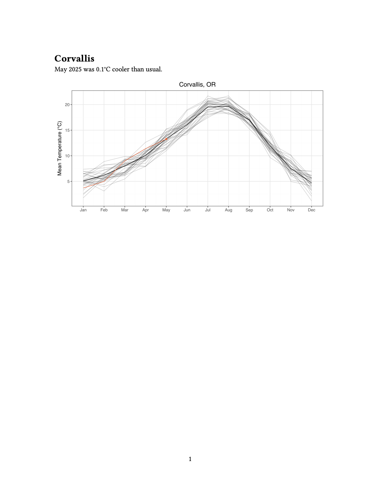
3. Render with a different parameter value
quarto render climate.ipynb -P city:Portland
climate.pdf
3. Render with a different parameter value
quarto render climate.ipynb -P city:Portland --output-file portland.pdf
portland.pdf
4. Automate rendering for all cities
cities:
city |
output_file |
|---|---|
| Portland | portland.pdf |
| Cottage Grove | cottage_grove.pdf |
| St. Helens | st_helens.pdf |
| … | … |
From One Notebook to Many Reports with Quarto
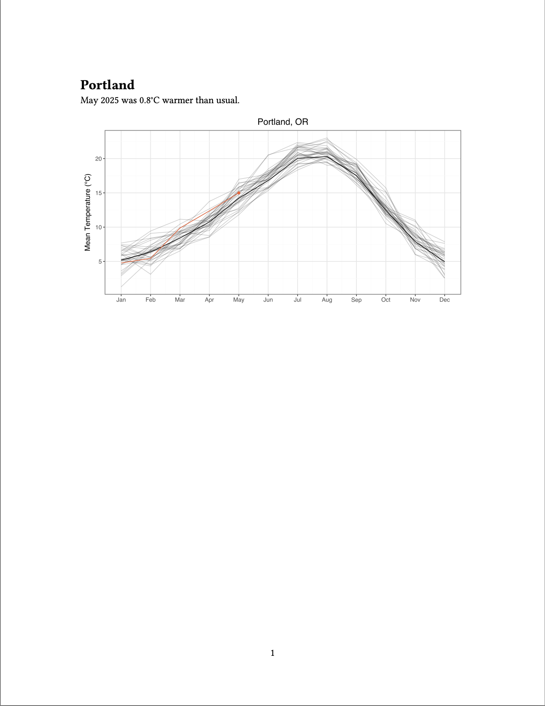
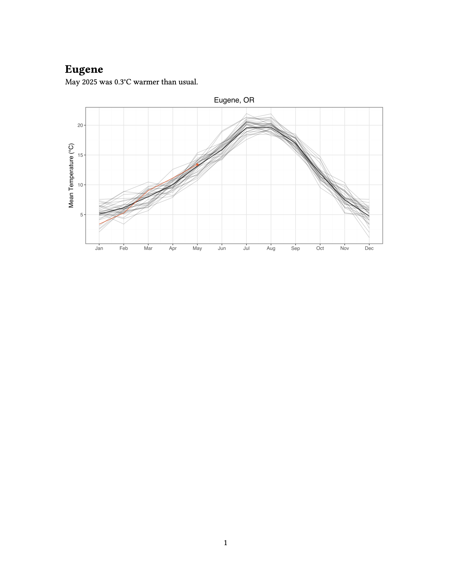
Making Pretty Reports
Add brand with Brand.yml
_brand.yml
color:
palette:
white: "#FFFFFF"
forest-green: "#2d5a3d"
charcoal-grey: "#555555"
orange: "#ff6b35"
foreground: charcoal-grey
background: white
primary: forest-green
secondary: orange
typography:
fonts:
- family: Montserrat
source: google
- family: Open Sans
source: google
base:
family: Open Sans
weight: 400
headings:
family: Montserrat
weight: 600
color: forest-green
logo:
medium: logo.pngQuarto will detect _brand.yml
More control over logo with options:
Use brand-yml package to set brand elements in your code:
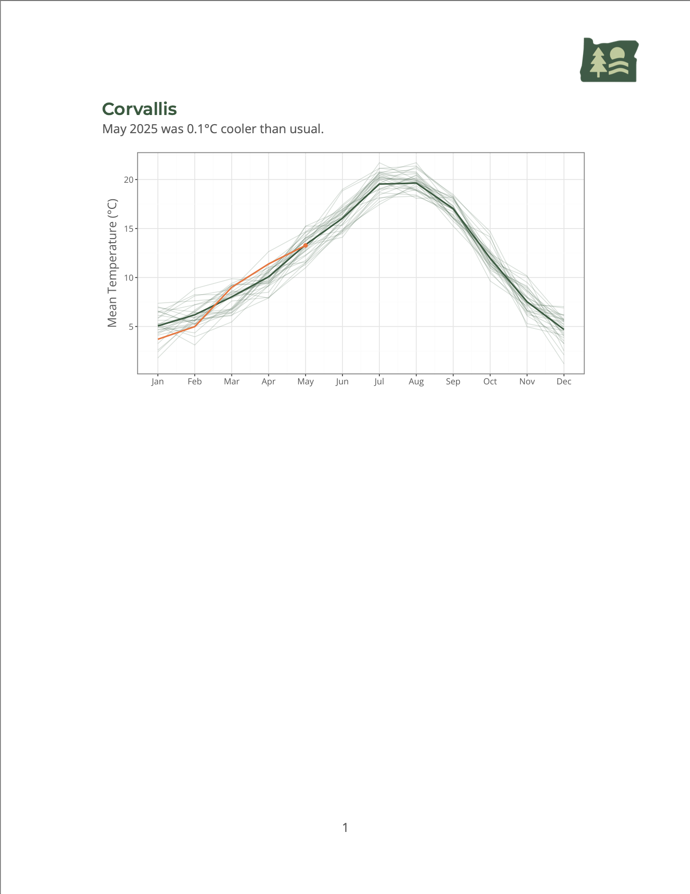
Brand + Typst = Pretty PDFs
Typst Docs: https://typst.app/docs/
Example:
Tips: Quarto + Typst
PDF Accessibility
Legislation mandating accessible PDFs:
USA ADA 2024 web rule for State and Local Governments
Neither format: typst nor format: pdf currently produce tagged PDFs 😔
Possible solutions:
Use
format: docxthen use Word to export to PDFDon’t use PDF. Use
format: html. Quarto ≥v1.8 websites passaxe-corechecks by default.
Quarto for parameterized reports
Advantages
Manage one notebook
Render to one or many formats
“You do you” automation
… so much more
Tables, e.g.
great_tables, work great tooInclude other
.mdfiles with the{{< include >}}shortcodeRearrange content with the
{{< contents >}}shortcodeShow content conditional on
format, e.g. interactive plot for HTML, static plot for PDFConsider Quarto’s plain text format (
*.qmd)— easier version control, copy-paste examples
Thank you
Quarto:
- Get Started: https://quarto.org/docs/get-started/
- Quarto: Parameters https://quarto.org/docs/computations/parameters.html
- Get Started: https://quarto.org/docs/get-started/
Source for examples:
cwickham/one-notebook-many-reports Quarto Q&A:
quarto-dev/quarto-cli Discussions Ask me at charlotte.wickham@posit.co
Big thanks to Jadey Ryan for the inspiring example and talk
.qmd
Consider using the Quarto document format *.qmd
Plain text, easier version control, copy-paste examples
No output from cells in file, forced reproducibility
Header and markdown unadorned
Code cells inside
{python}code blocks:
corvallis.qmd
---
format: typst
echo: false
title: Corvallis
jupyter: python3
---
```{python}
import polars as pl
from plotnine import *
from datetime import date
from calendar import month_name, month_abbr
from IPython.display import Markdown
```
```{python}
this_month = date(2025, 5, 1)
highlight_color = "#FF5733"
```
```{python}
tmean_oregon = pl.read_csv("data/tmean-oregon.csv", schema_overrides={"date": pl.Date})
tmean = tmean_oregon.filter(
pl.col("city") == "Corvallis",
)
```
```{python}
#| include: false
tmean.head()
```
```{python}
this = tmean.filter(pl.col("date") == this_month).row(0, named=True)
Markdown(f"{month_name[this['month']]} {this['year']} was {abs(this['tmean_diff']):.1f}°C {this['tmean_direction']} than usual.")
```
```{python}
(
ggplot(tmean, aes(x="month", y="tmean"))
+ geom_line(aes(group="year"), alpha=0.2)
+ geom_line(aes(y = "tmean_normal"))
+ geom_line(data=tmean.filter(pl.col("year") == 2025), color=highlight_color)
+ geom_point(
data=tmean.filter(pl.col("date") == this_month), color=highlight_color
)
+ scale_x_continuous(breaks=list(range(1, 13)), labels=list(month_abbr[1:]))
+ labs(title = "Corvallis, OR", x="", y="Mean Temperature (°C)")
+ theme_bw()
+ theme(figure_size = (8, 4))
)
```Typst + Quarto
Typst + Quarto: keep the intermediate .typ file
In document header of climate.ipynb:
quarto render climate.ipynb
Output:
climate.pdf: the final PDF resultclimate.typ: the intermediate Typst file. Useful for examining and debugging.
Typst + Quarto: include raw Typst code
Write Typst code in a raw cell with ```{=typst} syntax
Typst docs: https://typst.app/docs/
This raw syntax works to inject code into other formats too e.g. =html and =latex.
Typst + Quarto: wrap elements in Typst functions
Add the typst-function Quarto extension.